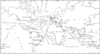

telecoupling

Definition: Telecoupling is a strategy that comprehensively analyzes both the socioeconomic and environmental impacts over long distances. The concept of telecoupling is a logical extension of research on coupled human and natural systems, in which interactions occur within particular geographic locations. The telecoupling framework derives from the understanding that all land systems are connected through coupled human and natural systems, and these that social, ecological, and economic impacts are the result. The term telecoupling was first coined by Jianguo Liu as an evolution of the term teleconnection. While teleconnection makes reference to atmospheric sciences only, telecoupling references the integration of multiple scientific disciplines including social science, environmental science, natural science, and systems science. The integration of these dynamic fields of science is what allows the telecoupling framework to comprehensively analyze distal connections that have been previously understudied and unacknowledged.
Source: Wikipedia
Wikipedia Page (Something wrong with this association? Let us know.)
Wikidata Page (Something wrong with this association? Let us know.)